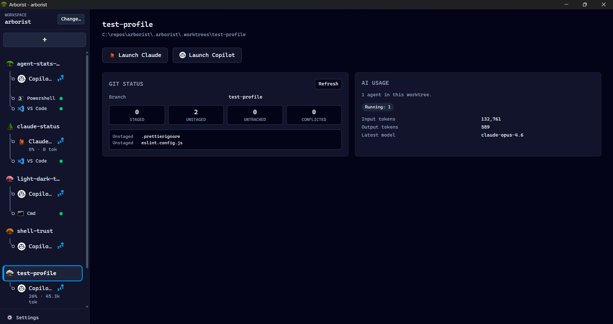

Worktree-scoped context
Each session runs from the selected worktree path, so prompts, shells, and tools operate in the right checkout.
Public desktop app for local developer workflows
Manage AI coding-assistant sessions across Git worktrees. Arborist is a cross-platform Tauri desktop app for developers using local Git worktrees, Claude CLI, GitHub Copilot CLI, terminals, and configured custom processes.

Arborist keeps multiple worktree-scoped Claude CLI, GitHub Copilot CLI, terminal, and custom-process sessions organized and restorable without replacing the tools you already use.
Each session runs from the selected worktree path, so prompts, shells, and tools operate in the right checkout.
Every terminal-backed session owns a PTY in the Rust backend and continues running across sidebar tab switches.
Arborist launches external tools and preserves their chat, auth, and update flows instead of becoming another chat UI.
Built around local Git worktrees, safe process launch, and long-running assistant sessions.
<repo>/.arborist/.worktrees/.cwd, not interpolated into shell strings.
Packaged builds are published on GitHub Releases. Source builds remain available for contributors and maintainers.
Use the GitHub Releases page for installers, release notes, and downloadable artifacts for supported platforms.
git on PATH.wmctrl for X11 application sub-tab focusing.
Release artifacts are not yet code-signed. We plan to add OS-level signing and notarization as soon as the project
qualifies. In the meantime, published release assets include GitHub build attestations and can be verified with
gh attestation verify <downloaded-file> --repo mcaden/arborist.
Public contribution guidance lives in CONTRIBUTING.md. Development and testing docs cover the full setup, but the shortest source-run path is:
git clone https://github.com/mcaden/arborist.git
cd arborist
nvm use
pnpm install
pnpm devUse GitHub issue templates for bugs and feature requests, follow the support policy for help, and report security vulnerabilities through the private security process.
See development and testing docs for prerequisites, verification commands, and test seams.
Patterns that work well once you have multiple worktrees and sessions running.
Use [worktree-name] Summary as your PR title convention. It makes the PR list scannable and ties each change back to the
worktree that produced it. AI agents can be instructed to follow this convention automatically.
Configure your app's dev server (or any long-running command) as a custom-process session type. Arborist will start it in the worktree's directory and keep it running alongside your AI and terminal sessions.
Set up prep commands like pnpm install and git merge main to run automatically when a worktree is created or
switched to. This keeps dependencies fresh and the branch up to date without manual steps.
The website is a public landing page. Detailed engineering docs stay in the repository.
Arborist is a public open-source project with explicit support boundaries. Code signing is planned.